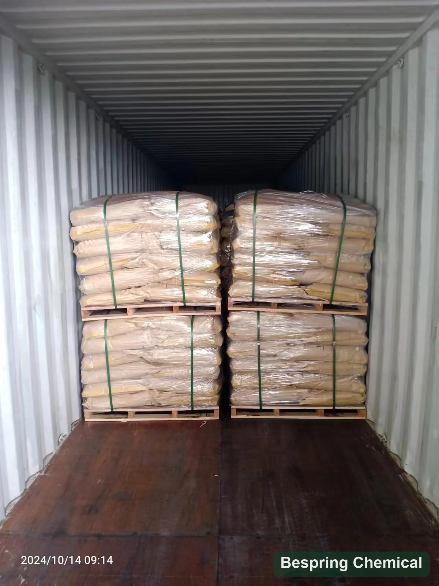

빵과 롤
실제 빵 정립에 있는 형 통제, 풍미 및 재고 유효 기간을 Evaluate.
제품 개요
참고 assay≥99.0%
등급과 수량에 맞춰 견적을 요청하세요.
등급과 수량에 맞춰 견적을 요청하세요.
인증 및 인증COA 및 요청에 대한 인증서
음식 등급 나트륨 propionate, 또한 불린 나트륨 propanoate는, INS 281, CAS 137-40-6 및 공식 C입니다3H5O2Na.
상업적인 참고 한계는 정확한 등급에, 예정된 음식 종류 및 목적지 시장 규칙 일치되어야 합니다. 제품 이름 혼자서 규정을 수립하지 않습니다.
신청 screening
법적인 사용, 복용량, 기술 성능 및 완성 된 제품에 센서 충격을 확인합니다.
실제 빵 정립에 있는 형 통제, 풍미 및 재고 유효 기간을 Evaluate.
노출량, PH 및 sensory 충격을 확인한 후에 적당한 빵집 제품에서 사용해.
dispersion, 호환성 및 선언 된 보존 요구 사항 확인.
보존 성과는 제품 PH, 물 활동 및 과정 위생에 달려 있습니다.
도전이나 유통기한 테스트를 통한 유효성능.
입자 크기, 추가 포인트 및 생산 조건 지정.
상업적인 명세
이 상업적인 참고 한계는 배치 COA 결과에서 분리됩니다. 주문하기 전에 등급, 분석 기준 및 적용 가능한 기준이라고.
스와이프하거나 키보드를 사용하여 모든 열을 확인하십시오
| 시험 품목 | 제품 정보 |
|---|---|
| 이름 * | 백색 결정 또는 분말 |
| pH, 20°C에서의 10% 수용액 | 8.0–10.5 |
| 알칼리성, 나트륨 탄산염으로 | Passes 시험 |
| 중금속 | 합격 제한은 지정하지 않습니다 |
| 제품정보 | ≤0.001% |
| 비소, 것과 같이2O3 | ≤0.0003% |
제안 등급의 건조감량과 불순물 기준, 시험법을 규격서에서 확인하고 실제 로트의 시험성적서와 비교하세요.
Qualification 지원
현재 명세/TDS, SDS, 방법 및 대표자 또는 배치 COA를 요구하십시오.
등급, 필요 서류, 수량, 포장, 납품처를 알려 주세요.
관련 기사 FAO/WHO JECFA 나트륨 propionate 기록 ID 컨텍스트를 위해.
저장과 취급
포장 및 물류 참조
이 날짜 사진은 배송 컨테이너에 팔레트 가방을 보여줍니다.

구매자 질문
나트륨 propionate는 형을 통제하고 보관 기간을 연장하기 위하여 보존하기 위하여 선택된 빵집 음식에서 이용된 propionic 산의 나트륨 소금입니다. 정확한 음식을 위한 법적인 사용 그리고 성과 검증하십시오.
상업적인 참고 명세는 ≥99.0%를 목록으로 만듭니다. 서명한 명세 및 COA를 확인하십시오.
등급, 필요 서류, 수량, 포장, 납품처를 알려 주세요.
명세/TDS, SDS, COA 및 적용 가능한 음식 질 증명서를 요구하십시오.
신청, 등급 또는 hydrate 모양, 명세, 양, 목적지 및 납품 날짜를 제공하십시오.
규격 중심 조달
응용 프로그램, 사양, 수량, 포장, 목적지 및 필요한 문서를 공유합니다.
양식을 사용할 수 없는 경우 문의 페이지를 이용해 주세요. 또는 영업팀으로 이메일을 보내 주세요.
당신의 등급 및 목적지 시장을 말하십시오 그래서 우리는 당신의 순서를 위해 어떤 문서가 유효하다는 것을 확인할 수 있습니다.
외부 참조는 일괄 인증서 또는 Bespring 제품 사양이 아닙니다.